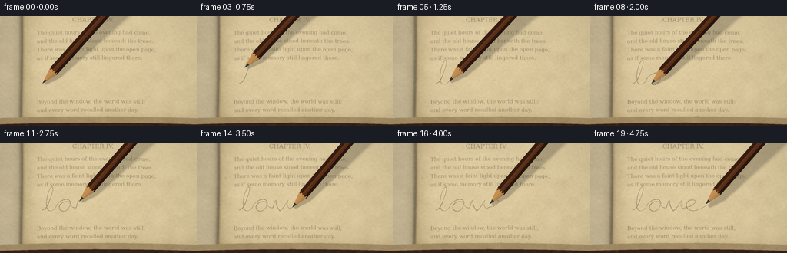
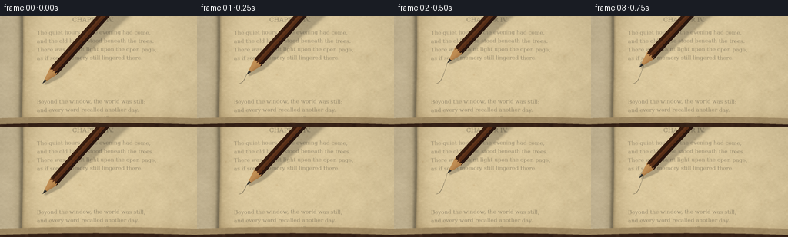

CODING AGENTS AS PIXEL WORLD MODELS
traex/GPT-6.1-Sol · mechanics_0049
点击播放 · 原生 RGB 像素
逐轮保存的候选
回放视频、检查图与代码变化。
每份候选均可单独播放。实际图片检查记录在下方工具轨迹中。
候选 01播放与检查图
点击播放 · 原生 RGB 像素


展开代码变化
--- 上一保存版本
+++ 本次保存版本
@@ -0,0 +1,187 @@
+from pathlib import Path
+import json
+import numpy as np
+from PIL import Image, ImageDraw, ImageFont, ImageFilter
+import artifact_io
+
+ROOT=Path(__file__).resolve().parent
+SPEC=json.loads((ROOT/'task_spec.json').read_text())
+W,H=SPEC['width'],SPEC['height']; S=4
+SW,SH=W*S,H*S
+rng=np.random.default_rng(49)
+Y,X=np.mgrid[:SH,:SW].astype(np.float32); X/=S;Y/=S
+
+def field(w,h,blur=0):
+ a=rng.normal(0,1,(h,w)).astype(np.float32)
+ im=Image.fromarray(a,'F').resize((SW,SH),Image.Resampling.BICUBIC)
+ # normalize resized random field
+ a=np.asarray(im);return a/(a.std()+1e-6)
+
+# A gently bowed, yellowed right-hand page and the narrow gutter of an open book.
+u=X-27-3.0*np.cos((Y-25)/103)
+v=Y+0.025*u-0.00013*u*u
+coarse=field(18,12); medium=field(105,75); fine=field(490,285)
+noise=rng.normal(0,1,(SH,SW)).astype(np.float32)
+curve=15*np.exp(-(u/12)**2)-3.0*np.exp(-((u-32)/18)**2)
+illum=6.0-0.025*X-0.030*Y-curve
+edgeage=8*np.exp(-np.maximum(0,u)/19)+9*np.exp(-np.abs(v-132)/6)
+rough=1.8*coarse+1.6*medium+1.45*fine+0.85*noise
+page=np.stack([220+illum-edgeage+rough,201+illum-edgeage*1.3+rough,158+illum-edgeage*1.45+rough],axis=-1)
+# Foxing is part of the page rather than moving film noise.
+for k in range(70):
+ cx=float(rng.uniform(25,259));cy=float(rng.uniform(0,134))
+ radius=float(rng.uniform(.15,1.6));strength=float(rng.uniform(2,16))
+ f=np.exp(-((X-cx)**2+(Y-cy)**2)/(radius*radius))
+ page-=f[...,None]*np.array([strength*.55,strength*.85,strength])
+# Gutter, a sliver of the opposite leaf, and the exposed page stack.
+gutter=27+3*np.cos((Y-25)/103)
+left=X<gutter
+leftbright=177+17*np.tanh((gutter-X-6)/7)+rough
+page[left]=np.stack([leftbright+9,leftbright-7,leftbright-42],-1)[left]
+crease=np.exp(-((X-gutter+1.5)/2.8)**2)
+page-=crease[...,None]*np.array([49,45,36])
+bottom=132-0.025*u+0.00013*u*u
+under=Y>bottom
+layerdepth=Y-bottom
+layercol=np.stack([167+6*np.sin(layerdepth*7)+rough,144+6*np.sin(layerdepth*7)+rough,104+5*np.sin(layerdepth*7)+rough],-1)
+page[under]=layercol[under]
+cover=Y>bottom+8.2
+woodnoise=field(62,15)
+leather=np.stack([55+woodnoise*2,34+woodnoise*1.5,23+woodnoise],-1)
+page[cover]=leather[cover]
+page=np.clip(page,0,255).astype(np.uint8)
+
+# A printed book page, with subdued, uneven letterpress ink.
+ink=Image.new('L',(SW,SH),0);d=ImageDraw.Draw(ink)
+serif='/usr/share/fonts/truetype/dejavu/DejaVuSerif.ttf'
+font=ImageFont.truetype(serif,7*S)
+small=ImageFont.truetype(serif,6*S)
+heading=ImageFont.truetype('/usr/share/fonts/truetype/dejavu/DejaVuSerif.ttf',8*S)
+d.text((94*S,1*S),'CHAPTER IV.',font=heading,fill=155)
+lines=[(18,'The quiet hours of the evening had come,'),(29,'and the old house stood beneath the trees.'),(40,'There was a faint light upon the open page,'),(51,'as if some memory still lingered there.'),(108,'Beyond the window, the world was still;'),(119,'and every word recalled another day.')]
+for yy,txt in lines:d.text((48*S,yy*S),txt,font=font,fill=154)
+d.text((134*S,130*S),'47',font=small,fill=117)
+# Map the printing with the same gentle curvature as the leaf.
+a=np.asarray(ink).astype(np.float32)
+ix=np.clip((X*S).astype(int),0,SW-1)
+iy=np.clip((v*S).astype(int),0,SH-1)
+a=a[iy,ix]/255
+fade=np.clip(.76+.10*medium+.04*fine,.45,1)
+a*=fade*(~under)*(X>gutter+8)
+base=page.astype(np.float32)*(1-a[...,None]*.63)
+# Visible minute fibers, most apparent in the blank writing area.
+im=Image.fromarray(np.uint8(np.clip(base,0,255)));fd=ImageDraw.Draw(im,'RGBA')
+for _ in range(2300):
+ x=float(rng.uniform(33,256));y=float(rng.uniform(0,130))
+ ln=float(rng.uniform(.2,1.9));ang=float(rng.normal(.12,.5))
+ color=(255,241,204,int(rng.uniform(12,35))) if rng.random()<.6 else (111,83,45,int(rng.uniform(8,21)))
+ fd.line((x*S,y*S,(x+ln*np.cos(ang))*S,(y+ln*np.sin(ang))*S),fill=color,width=1)
+base=np.asarray(im).astype(np.float32)
+
+# A continuous handwritten 'love', represented by a pen trajectory.
+segments=[
+ ((55,88),(60,87),(63,81),(65,74)),
+ ((65,74),(73,55),(67,54),(63,65)),
+ ((63,65),(59,78),(59,93),(69,88)),
+ ((69,88),(74,85),(73,79),(80,76)),
+ ((80,76),(88,71),(94,76),(91,82)),
+ ((91,82),(88,92),(77,91),(77,84)),
+ ((77,84),(78,79),(84,76),(90,77)),
+ ((90,77),(91,81),(94,86),(99,85)),
+ ((99,85),(101,80),(101,76),(103,75)),
+ ((103,75),(103,81),(105,85),(108,89)),
+ ((108,89),(112,87),(116,80),(119,75)),
+ ((119,75),(116,84),(120,88),(125,84)),
+ ((125,84),(132,84),(141,76),(135,75)),
+ ((135,75),(127,73),(121,82),(128,87)),
+ ((128,87),(135,92),(143,86),(150,83)),
+]
+pts=[]
+for seg in segments:
+ p=np.array(seg,float)
+ for t in np.linspace(0,1,65,endpoint=False):
+ pts.append((1-t)**3*p[0]+3*(1-t)**2*t*p[1]+3*(1-t)*t*t*p[2]+t**3*p[3])
+pts.append(np.array(segments[-1][-1],float))
+pts=np.array(pts)
+dist=np.r_[0,np.cumsum(np.linalg.norm(np.diff(pts,axis=0),axis=1))]
+# A stable grain mask produces discontinuities as graphite catches the tooth.
+graphitegrain=np.clip(.79+.22*fine+.19*noise,.14,1.0)
+
+def pencil(image,tip,i,lift=0):
+ # Shaft rising towards the upper right, with three varnished wooden facets.
+ angle=-.84+.025*np.sin(i*.31)
+ direction=np.array([np.cos(angle),np.sin(angle)])
+ side=np.array([-direction[1],direction[0]])
+ dx=X-tip[0];dy=Y-tip[1]+lift
+ along=dx*direction[0]+dy*direction[1]
+ across=dx*side[0]+dy*side[1]
+ radius=6.4
+ cone=22.0
+ # Soft contact shadow, widening as the barrel rises away from the page.
+ sox=2.0+.055*np.maximum(along,0)+lift*.5
+ soy=2.0+.08*np.maximum(along,0)+lift
+ sl=(dx-sox)*direction[0]+(dy-soy)*direction[1]
+ sn=(dx-sox)*side[0]+(dy-soy)*side[1]
+ sr=radius*np.clip(sl/cone,0,1)
+ softness=.7+.015*np.maximum(sl,0)+lift*.18
+ sh=np.exp(-np.maximum(np.abs(sn)-sr,0)**2/(2*softness**2))
+ sh*=np.clip(sl/3,0,1)*.21
+ image=image*(1-sh[...,None])
+ rr=radius*np.clip(along/cone,0,1)
+ mask=(along>=0)&(np.abs(across)<=rr)
+ z=np.clip(across/radius,-1,1)
+ # Clear facet boundaries and a slim warm specular stripe.
+ facet=np.where(z<-.38,0,np.where(z<.42,1,2))
+ colors=np.array([[54,28,15],[88,46,23],[41,22,15]],np.float32)
+ color=colors[facet]
+ shine=np.exp(-((z+.15)/.105)**2)*16
+ grain=(2*np.sin(across*5.3+.025*along)+1.3*np.sin(across*19+along*.012)+.5*noise)
+ color=color+shine[...,None]*np.array([1,.72,.44])+grain[...,None]
+ # Faint lengthwise varnish wear and a distinct edge light.
+ hair=np.exp(-((z+.78)/.032)**2)*9
+ color+=hair[...,None]*np.array([1,.74,.43])
+ wood=along<cone+1.1*np.sin(across*1.8)+.6*np.sin(across*3)
+ localz=np.clip(across/(rr+.001),-1,1)
+ wlight=13*(1-localz)-8*np.abs(localz)
+ wgrain=4*np.sin(across*6+along*.14)+2.4*np.sin(across*17-along*.11)+fine*1.2
+ wc=np.stack([179+wlight+wgrain,128+wlight+wgrain,73+wlight*.75+wgrain],-1)
+ color=np.where(wood[...,None],wc,color)
+ # The exposed graphite core continues down to the contact point.
+ core=(along<6.7)&(np.abs(across)<(.16+along*.245))
+ gc=np.stack([43+8*(1-localz),42+8*(1-localz),38+8*(1-localz)],-1)
+ color=np.where(core[...,None],gc,color)
+ # Anti-aliasing at the silhouette.
+ alpha=np.clip((rr-np.abs(across))*S+.5,0,1)*np.clip(along*S+.5,0,1)
+ image=image*(1-alpha[...,None])+np.clip(color,0,255)*alpha[...,None]
+ return image
+
+frames=[]
+for i in range(SPEC['frames']):
+ progress=min(1, i/18)
+ # A slightly slower loop and a natural finishing flourish.
+ length=dist[-1]*progress
+ n=int(np.searchsorted(dist,length,side='right'))
+ n=max(1,min(n,len(pts)))
+ tip=pts[n-1]
+ mark=Image.new('L',(SW,SH),0);md=ImageDraw.Draw(mark)
+ if n>1:
+ # Variable pressure and non-uniform overlap, never a perfectly black line.
+ for j in range(1,n):
+ pressure=0.70+.12*np.sin(j*.051)+.12*np.sin(j*.023)
+ md.line(tuple(pts[j-1]*S)+tuple(pts[j]*S),fill=int(170*pressure),width=max(2,int(S*(.72+.22*pressure))))
+ m=np.asarray(mark).astype(np.float32)/255*graphitegrain
+ image=base*(1-m[...,None]*.68)
+ # Small silver-grey highlights along some graphite ridges.
+ image+=m[...,None]*np.array([.4,.6,1.0])
+ # Optical falloff keeps the paper tooth clear in the contact plane.
+ pil=Image.fromarray(np.uint8(np.clip(image,0,255)))
+ blurred=np.asarray(pil.filter(ImageFilter.GaussianBlur(1.4))).astype(float)
+ blurweight=np.clip(np.abs(Y-83)/95,0,.58)
+ image=image*(1-blurweight[...,None])+blurred*blurweight[...,None]
+ image=pencil(image,tip,i,lift=2.5 if i==19 else 0)
+ # Restrained macro lens vignette; no flickering texture or moving background.
+ vignette=1-.10*((X-133)/180)**2-.07*((Y-78)/112)**2
+ image*=vignette[...,None]
+ frame=Image.fromarray(np.uint8(np.clip(image,0,255))).resize((W,H),Image.Resampling.LANCZOS)
+ frames.append(np.asarray(frame))
+artifact_io.save(np.stack(frames),ROOT)
可观测工具轨迹
实际执行的命令与返回图片。
命令 1exit 0
/bin/bash -lc "ls -la && cat prompt.txt && printf '\\n---RULES---\\n' && cat GENERATION_RULES.md && printf '\\n---SPEC---\\n' && cat task_spec.json"
命令 2exit 0
/bin/bash -lc 'cat artifact_io.py && fc-list | head -30'
命令 3exit 0
/bin/bash -lc "cat > generate.py <<'PY'
from pathlib import Path
import json
import numpy as np
from PIL import Image, ImageDraw, ImageFont, ImageFilter
import artifact_io
ROOT=Path(__file__).resolve().parent
SPEC=json.loads((ROOT/'task_spec.json').read_text())
W,H=SPEC['width'],SPEC['height']; S=4
SW,SH=W*S,H*S
rng=np.random.default_rng(49)
Y,X=np.mgrid[:SH,:SW].astype(np.float32); X/=S;Y/=S
def field(w,h,blur=0):
a=rng.normal(0,1,(h,w)).astype(np.float32)
im=Image.fromarray(a,'F').resize((SW,SH),Image.Resampling.BICUBIC)
# normalize resized random field
a=np.asarray(im);return a/(a.std()+1e-6)
# A gently bowed, yellowed right-hand page and the narrow gutter of an open book.
u=X-27-3.0*np.cos((Y-25)/103)
v=Y+0.025*u-0.00013*u*u
coarse=field(18,12); medium=field(105,75); fine=field(490,285)
noise=rng.normal(0,1,(SH,SW)).astype(np.float32)
curve=15*np.exp(-(u/12)**2)-3.0*np.exp(-((u-32)/18)**2)
illum=6.0-0.025*X-0.030*Y-curve
edgeage=8*np.exp(-np.maximum(0,u)/19)+9*np.exp(-np.abs(v-132)/6)
rough=1.8*coarse+1.6*medium+1.45*fine+0.85*noise
page=np.stack([220+illum-edgeage+rough,201+illum-edgeage*1.3+rough,158+illum-edgeage*1.45+rough],axis=-1)
# Foxing is part of the page rather than moving film noise.
for k in range(70):
cx=float(rng.uniform(25,259));cy=float(rng.uniform(0,134))
radius=float(rng.uniform(.15,1.6));strength=float(rng.uniform(2,16))
f=np.exp(-((X-cx)**2+(Y-cy)**2)/(radius*radius))
page-=f[...,None]*np.array([strength*.55,strength*.85,strength])
# Gutter, a sliver of the opposite leaf, and the exposed page stack.
gutter=27+3*np.cos((Y-25)/103)
left=X<gutter
leftbright=177+17*np.tanh((gutter-X-6)/7)+rough
page[left]=np.stack([leftbright+9,leftbright-7,leftbright-42],-1)[left]
crease=np.exp(-((X-gutter+1.5)/2.8)**2)
page-=crease[...,None]*np.array([49,45,36])
bottom=132-0.025*u+0.00013*u*u
under=Y>bottom
layerdepth=Y-bottom
layercol=np.stack([167+6*np.sin(layerdepth*7)+rough,144+6*np.sin(layerdepth*7)+rough,104+5*np.sin(layerdepth*7)+rough],-1)
page[under]=layercol[under]
cover=Y>bottom+8.2
woodnoise=field(62,15)
leather=np.stack([55+woodnoise*2,34+woodnoise*1.5,23+woodnoise],-1)
page[cover]=leather[cover]
page=np.clip(page,0,255).astype(np.uint8)
# A printed book page, with subdued, uneven letterpress ink.
ink=Image.new('L',(SW,SH),0);d=ImageDraw.Draw(ink)
serif='/usr/share/fonts/truetype/dejavu/DejaVuSerif.ttf'
font=ImageFont.truetype(serif,7*S)
small=ImageFont.truetype(serif,6*S)
heading=ImageFont.truetype('/usr/share/fonts/truetype/dejavu/DejaVuSerif.ttf',8*S)
d.text((94*S,1*S),'CHAPTER IV.',font=heading,fill=155)
lines=[(18,'The quiet hours of the evening had come,'),(29,'and the old house stood beneath the trees.'),(40,'There was a faint light upon the open page,'),(51,'as if some memory still lingered there.'),(108,'Beyond the window, the world was still;'),(119,'and every word recalled another day.')]
for yy,txt in lines:d.text((48*S,yy*S),txt,font=font,fill=154)
d.text((134*S,130*S),'47',font=small,fill=117)
# Map the printing with the same gentle curvature as the leaf.
a=np.asarray(ink).astype(np.float32)
ix=np.clip((X*S).astype(int),0,SW-1)
iy=np.clip((v*S).astype(int),0,SH-1)
a=a[iy,ix]/255
fade=np.clip(.76+.10*medium+.04*fine,.45,1)
a*=fade*(~under)*(X>gutter+8)
base=page.astype(np.float32)*(1-a[...,None]*.63)
# Visible minute fibers, most apparent in the blank writing area.
im=Image.fromarray(np.uint8(np.clip(base,0,255)));fd=ImageDraw.Draw(im,'RGBA')
for _ in range(2300):
x=float(rng.uniform(33,256));y=float(rng.uniform(0,130))
ln=float(rng.uniform(.2,1.9));ang=float(rng.normal(.12,.5))
color=(255,241,204,int(rng.uniform(12,35))) if rng.random()<.6 else (111,83,45,int(rng.uniform(8,21)))
fd.line((x*S,y*S,(x+ln*np.cos(ang))*S,(y+ln*np.sin(ang))*S),fill=color,width=1)
base=np.asarray(im).astype(np.float32)
# A continuous handwritten 'love', represented by a pen trajectory.
segments=[
((55,88),(60,87),(63,81),(65,74)),
((65,74),(73,55),(67,54),(63,65)),
((63,65),(59,78),(59,93),(69,88)),
((69,88),(74,85),(73,79),(80,76)),
((80,76),(88,71),(94,76),(91,82)),
((91,82),(88,92),(77,91),(77,84)),
((77,84),(78,79),(84,76),(90,77)),
((90,77),(91,81),(94,86),(99,85)),
((99,85),(101,80),(101,76),(103,75)),
((103,75),(103,81),(105,85),(108,89)),
((108,89),(112,87),(116,80),(119,75)),
((119,75),(116,84),(120,88),(125,84)),
((125,84),(132,84),(141,76),(135,75)),
((135,75),(127,73),(121,82),(128,87)),
((128,87),(135,92),(143,86),(150,83)),
]
pts=[]
for seg in segments:
p=np.array(seg,float)
for t in np.linspace(0,1,65,endpoint=False):
pts.append((1-t)**3*p[0]+3*(1-t)**2*t*p[1]+3*(1-t)*t*t*p[2]+t**3*p[3])
pts.append(np.array(segments[-1][-1],float))
pts=np.array(pts)
dist=np.r_[0,np.cumsum(np.linalg.norm(np.diff(pts,axis=0),axis=1))]
# A stable grain mask produces discontinuities as graphite catches the tooth.
graphitegrain=np.clip(.79+.22*fine+.19*noise,.14,1.0)
def pencil(image,tip,i,lift=0):
# Shaft rising towards the upper right, with three varnished wooden facets.
angle=-.84+.025*np.sin(i*.31)
direction=np.array([np.cos(angle),np.sin(angle)])
side=np.array([-direction[1],direction[0]])
dx=X-tip[0];dy=Y-tip[1]+lift
along=dx*direction[0]+dy*direction[1]
across=dx*side[0]+dy*side[1]
radius=6.4
cone=22.0
# Soft contact shadow, widening as the barrel rises away from the page.
sox=2.0+.055*np.maximum(along,0)+lift*.5
soy=2.0+.08*np.maximum(along,0)+lift
sl=(dx-sox)*direction[0]+(dy-soy)*direction[1]
sn=(dx-sox)*side[0]+(dy-soy)*side[1]
sr=radius*np.clip(sl/cone,0,1)
softness=.7+.015*np.maximum(sl,0)+lift*.18
sh=np.exp(-np.maximum(np.abs(sn)-sr,0)**2/(2*softness**2))
sh*=np.clip(sl/3,0,1)*.21
image=image*(1-sh[...,None])
rr=radius*np.clip(along/cone,0,1)
mask=(along>=0)&(np.abs(across)<=rr)
z=np.clip(across/radius,-1,1)
# Clear facet boundaries and a slim warm specular stripe.
facet=np.where(z<-.38,0,np.where(z<.42,1,2))
colors=np.array([[54,28,15],[88,46,23],[41,22,15]],np.float32)
color=colors[facet]
shine=np.exp(-((z+.15)/.105)**2)*16
grain=(2*np.sin(across*5.3+.025*along)+1.3*np.sin(across*19+along*.012)+.5*noise)
color=color+shine[...,None]*np.array([1,.72,.44])+grain[...,None]
# Faint lengthwise varnish wear and a distinct edge light.
hair=np.exp(-((z+.78)/.032)**2)*9
color+=hair[...,None]*np.array([1,.74,.43])
wood=along<cone+1.1*np.sin(across*1.8)+.6*np.sin(across*3)
localz=np.clip(across/(rr+.001),-1,1)
wlight=13*(1-localz)-8*np.abs(localz)
wgrain=4*np.sin(across*6+along*.14)+2.4*np.sin(across*17-along*.11)+fine*1.2
wc=np.stack([179+wlight+wgrain,128+wlight+wgrain,73+wlight*.75+wgrain],-1)
color=np.where(wood[...,None],wc,color)
# The exposed graphite core continues down to the contact point.
core=(along<6.7)&(np.abs(across)<(.16+along*.245))
gc=np.stack([43+8*(1-localz),42+8*(1-localz),38+8*(1-localz)],-1)
color=np.where(core[...,None],gc,color)
# Anti-aliasing at the silhouette.
alpha=np.clip((rr-np.abs(across))*S+.5,0,1)*np.clip(along*S+.5,0,1)
image=image*(1-alpha[...,None])+np.clip(color,0,255)*alpha[...,None]
return image
frames=[]
for i in range(SPEC['frames']):
progress=min(1, i/18)
# A slightly slower loop and a natural finishing flourish.
length=dist[-1]*progress
n=int(np.searchsorted(dist,length,side='right'))
n=max(1,min(n,len(pts)))
tip=pts[n-1]
mark=Image.new('L',(SW,SH),0);md=ImageDraw.Draw(mark)
if n>1:
# Variable pressure and non-uniform overlap, never a perfectly black line.
for j in range(1,n):
pressure=0.70+.12*np.sin(j*.051)+.12*np.sin(j*.023)
md.line(tuple(pts[j-1]*S)+tuple(pts[j]*S),fill=int(170*pressure),width=max(2,int(S*(.72+.22*pressure))))
m=np.asarray(mark).astype(np.float32)/255*graphitegrain
image=base*(1-m[...,None]*.68)
# Small silver-grey highlights along some graphite ridges.
image+=m[...,None]*np.array([.4,.6,1.0])
# Optical falloff keeps the paper tooth clear in the contact plane.
pil=Image.fromarray(np.uint8(np.clip(image,0,255)))
blurred=np.asarray(pil.filter(ImageFilter.GaussianBlur(1.4))).astype(float)
blurweight=np.clip(np.abs(Y-83)/95,0,.58)
image=image*(1-blurweight[...,None])+blurred*blurweight[...,None]
image=pencil(image,tip,i,lift=2.5 if i==19 else 0)
# Restrained macro lens vignette; no flickering texture or moving background.
vignette=1-.10*((X-133)/180)**2-.07*((Y-78)/112)**2
image*=vignette[...,None]
frame=Image.fromarray(np.uint8(np.clip(image,0,255))).resize((W,H),Image.Resampling.LANCZOS)
frames.append(np.asarray(frame))
artifact_io.save(np.stack(frames),ROOT)
PY
python generate.py"视觉工具实际返回图片 1

保存候选 1 份；完成命令 3 次；可验证图片返回 1 张。原始 API 响应与完整日志保留在本地。